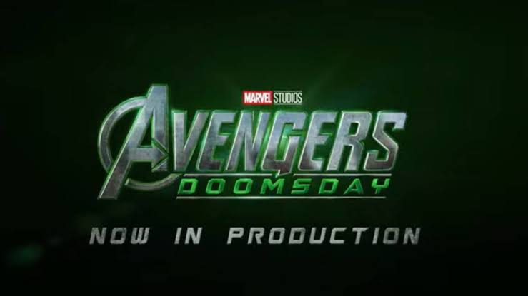

la pelicula (avengers: doomsday en ingles) es una pelicula de superheroes producida por marvel studios en asociancion con wal disney pintures y distribuida por walt dinesy studios motion pintures es la trigesima novena pelicula del universo cinematografivo de marvel ucm y secuela de avenngers endgame despues de la producciones endocada en la saga del multiverso el inminente enfrentamiento contra el temible doctor doom y el esperado reencuentro de los heroes de distintos universos
antes de si anuncio oficial en 2024 surgieron los primeros reportes de que marvel estudios jaboal confirmado oficialmente el desattollo de abenhers dooms day durante la san diego comic -con rm kilop fr 2024 dr anuncio que la pelicula contraria con el regreso de los hermanos rusos en la direccion el rodake de esta comenzo en 2025 en colaboraxion con disney alreder¿dor de la prodiccion de 2025 y 2026 se revelaron varias capturas u detalles sobre el regreso de robert downey jr. al universo cinematografico
la muerte viene por todos nostoros la pregunta no es ¿estas preparado para morir ? la preguta es ¿quien serias cuando cierres los ojos?